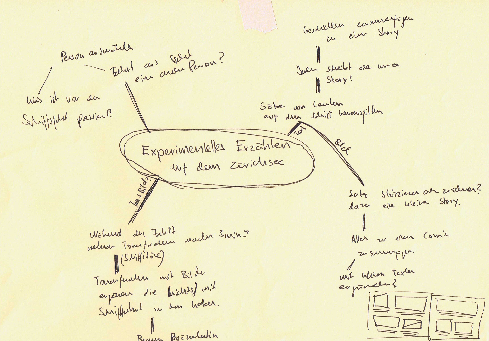
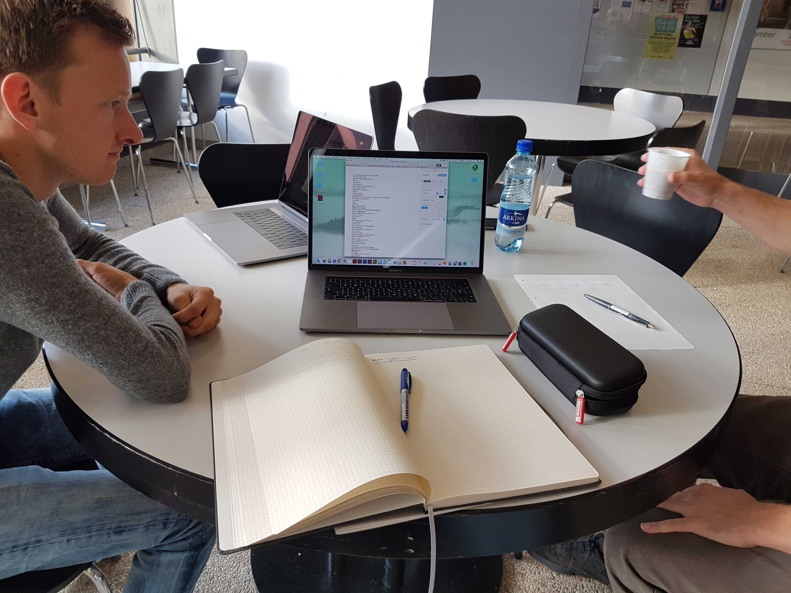
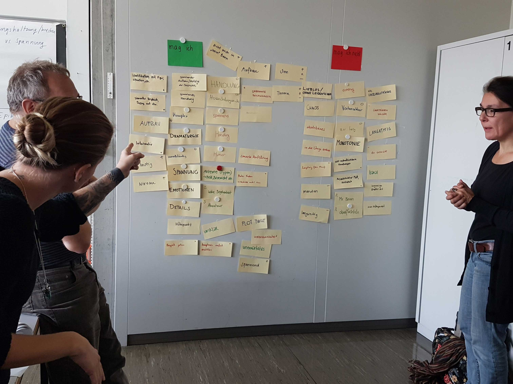
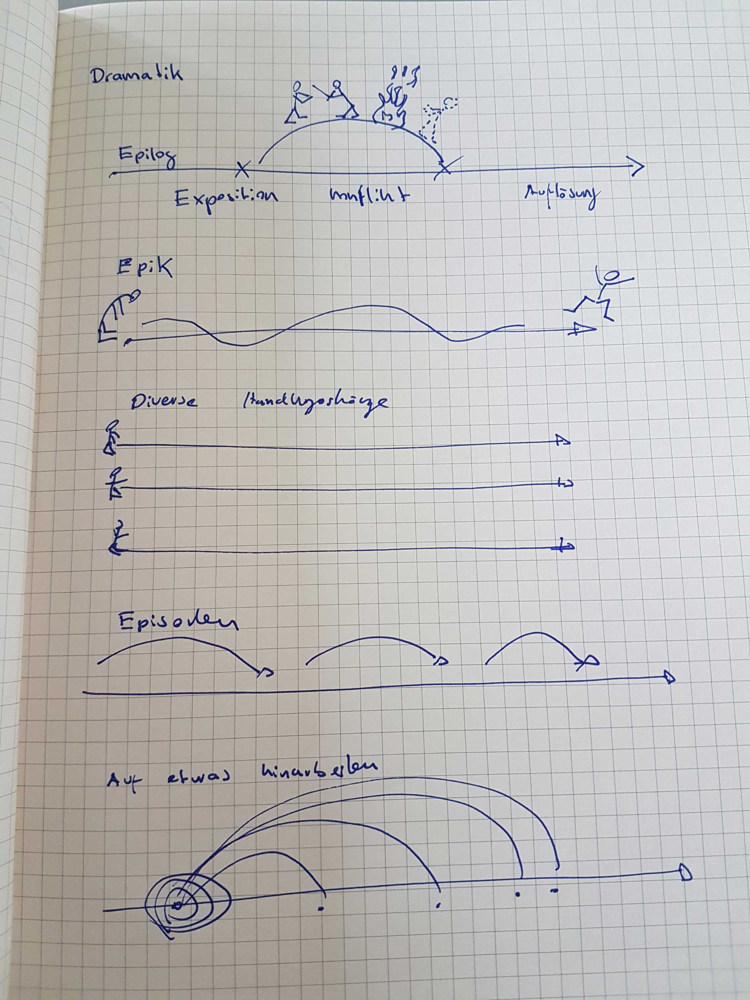
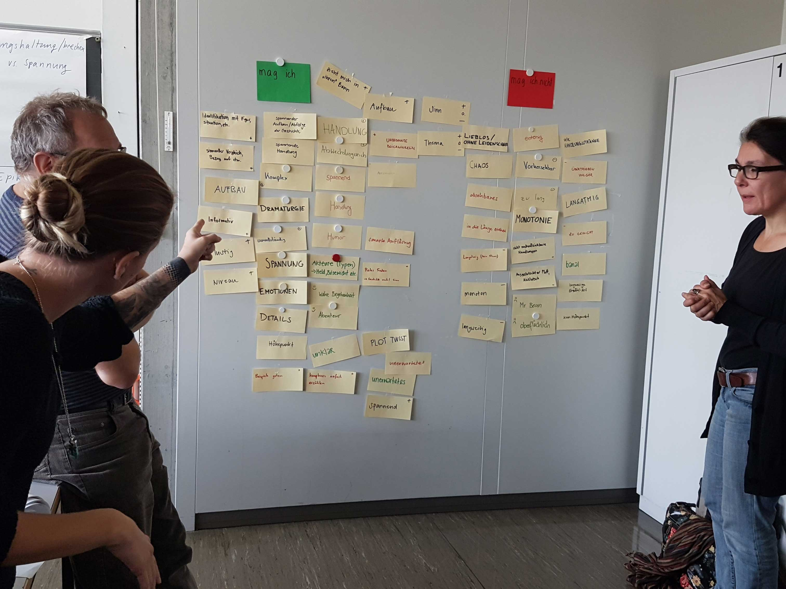
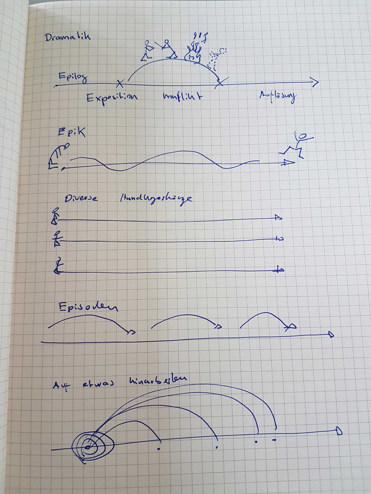
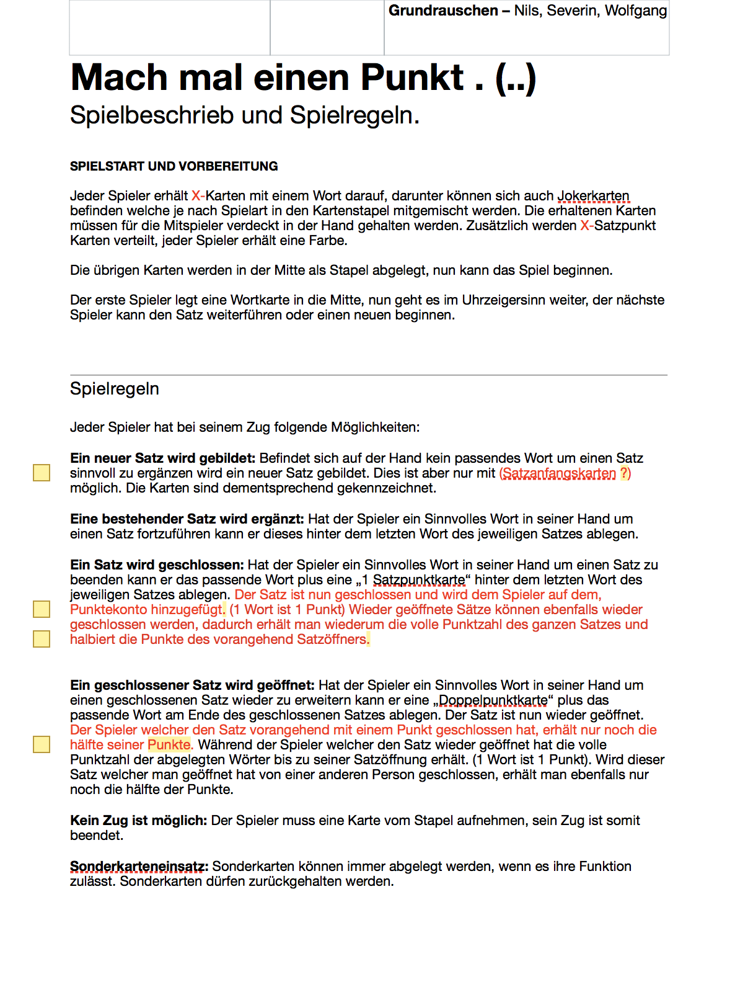
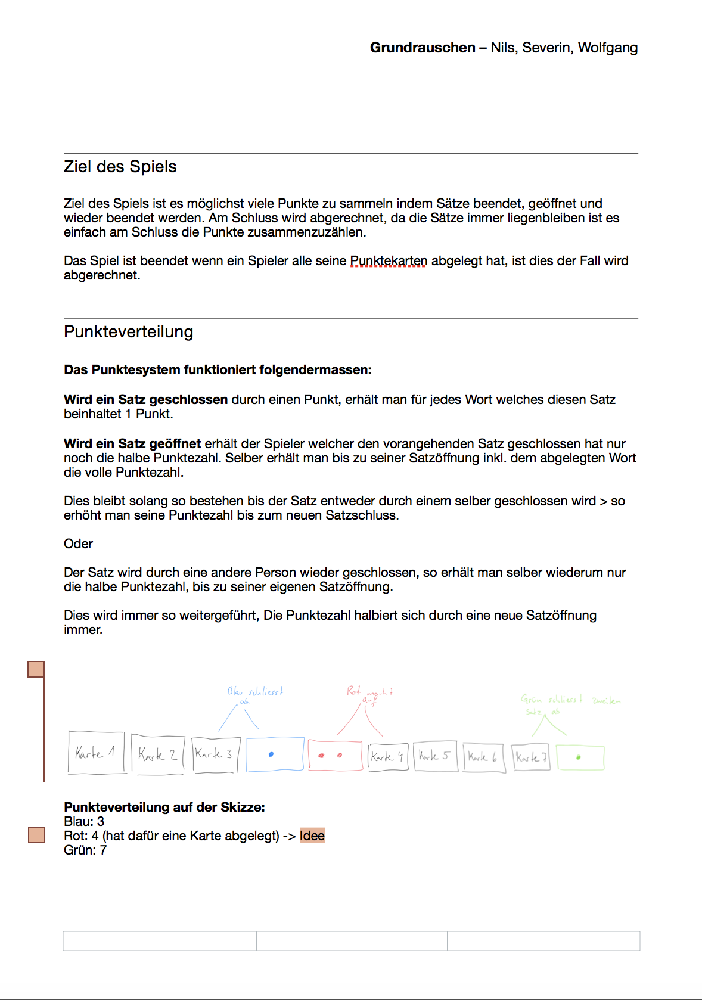

Erste Schritte
Am ersten Tag haben wir uns Gedanken gemacht, was eigentlich eine Erzählung ist. Wo überall begegnen wir Geschichten und Erzählungen und wie werden sie vermittelt? Ein erstes Experiment hat uns aufgezeigt wie man auf eine unkonventionelle Art und Weise eine Geschichte finden kann.
🗓 26.08.17 - Die menschliche Kamera- Jeder spielt einmal Kameramann oder Kamera, Fotos werden mit den Augen und dem Gedächtniss geschossen.
- Die Fotos werden grob auf ein Dia skizziert und durch weitere Dias ergänzt.
- Zu jedem Dia wird ein Satz geschrieben, so dass eine Story entsteht.
- Die Dias werden mit einer anderen Gruppe ausgetauscht, und sie schreiben ebenfalls eine Story dazu.
- Die Storys werden verglichen.

Das eigene Projekt
Heute haben wir uns an unsere eigenes Projekt gewagt. Wir haben die Aufgabe bekommen ein Experiment zu lancieren bei dem Rohmaterial für eine Erzählung generiert wird. Das Rohmaterial muss in irgendeiner Form bei einer kleinen Rundfahrt auf dem Zürichsee gesammelt werden. Ich habe mir bei einem kleinen Brainstorming diverse Ideen notiert. Wie kann man möglichst ohne in den „Mikrokosmos Schiff“ einzugreifen Rohmaterial sammeln?
Meine Idee war, ich starte einen Lauschangriff. Immer wenn ich an belebten Orten bin schnappe ich unbewusst prägnante Sätze auf. Diese wollte ich verwenden, Beispiel; Vor ein paar jähren flanierte ich mit meiner Freundin an einem Weihnachtsmarkt, da sagte einer im vorbeigehen: „Weihnachtsmärkte sind nun mal voll“. Dieser Satz ist mir geblieben und ich denke immer wieder an diesen Satz.
In unserer 3er-Gruppe haben wir diese Idee dann auch weiterverfolgt und ausgearbeitet. Da es aber ein laufender Prozess ist, wollten wir noch nicht zu sehr ins Detail gehen und uns die Möglichkeiten offen lassen. Einig sind wir uns damit, dass wir nächsten Samstag alles Sammeln was wir aufschnappen und so einen Stäzepool generieren.
Auf dem Schiff
Heute war es so weit, wir haben unser Experiment durchgeführt. Wir betraten das Boot mit dem Vorhaben, alles zu sammeln was mit Sprache zu tun hat. Gesprochenes was wir aufschnappen oder geschriebenes in irgendeine Form. Das Morgen was grau und nass, es regnete und die Temperaturen sind ziemlich gesunken von Freitag auf Samstag. Wir hatten ein wenig angst das Schiff könnte zu wenig gefüllt sein. Zu beginn war es auch eher mässig besucht, mit jeder Station war die Auslastung aber grösser.
Das Interessante an diesem Experiment war einerseits zu hören was andere Leute so untereinander Diskutieren, aber auch das eigene Verhalten. Mir ist aufgefallen wie selektiv wir beim Hören sind, ich konnte nur diesen Gesprächen folgen auf welche ich mich konzentrierte. Ansonsten war alles um mich ein wildes durcheinander von Wortfetzen die nicht in Erinnerung blieben.
Unser Resultat war sehr ansehnlich, wir konnten eine beachtliche Menge an Sätzen festhalten, teilweisse sehr ernst, dramatisch aber auch unglaublich humorvoll wie: „Da wo d Möwe drufschiiiset!“. Unser nächster Schritt wird das Sortieren und bearbeiten dieser Sätze sein. Wie wir genau vorgehen wird sich bei unser nächsten Zusammenarbeiten herauskristallisieren.
Ein Spiel entsteht
Da war er also, unser Sprachpool an Wörtern denn wir auf heute aufgeschnappt, festgehalten, digitalisiert und online gestellt haben. 4 Seiten gefüllt mit Wortfetzen, Sätzen und einzelnen Wörtern und dazu einen Ordner voller Bilder die ebenfalls Sprache enthielten. Wir mussten uns zuerst einen Überblick verschaffen, in welche Richtung werden wir mit diesem Material gehen. Unsere Idee von einem Spiel schwebte immer noch in unseren Köpfen, doch wie bringen wir diesen riesigen Wörter/Sprachpool in ein Spiel, welches diesen als Grundlage für eine spielerische Erzählung nutzt?
Brainstorming war angesagt, wir sind an den runden Tisch gesessen (er war wirklich rund) und haben unseren Ideen freien lauf gelassen. Was gibt es für Spiele mit Sprache? Kennen wir solche Spiele eventuell schon? Können wir ein simples Spiel entwickeln dass trotzdem Spass macht? Nehmen wir uns zu viel vor? Das sind alles Fragen die im Raum standen und beantwortet werden wollten
 Mach mal einen Punkt!
Mach mal einen Punkt!
Reihen wir doch die Wörter aneinander und bilden so neue Sätze? Was für eine tolle Idee! Wir konnten uns kaum halten vor Freude. Wir hatten soeben das langweiligste Spiel entwickelt das es gibt. Es muss doch möglich sein ein Wortspiel bei dem man der Reihe nach Wörter ablegen kann spannend zu gestalten. Und plötzlich kam die Idee, mach mal einen Punkt!
Ja genau, mach mal einen Punkt. Das ist die Idee! Und ich komme jetzt gleich auf den Punkt was wir damit genau meinen. Nämlich das beenden und öffnen eines Satzes. Der Reihe nach werden die Wörter abgelegt, immer so dass sie einen Satz fortführen oder falls dies nicht möglich ist, einen neuen Satz beginnen. Der spannende Twist ist, man kann die Sätze mit Satzpunkt Karten schliessen und sich so Punkte für den Satz sichern. Jedoch kann man Sätze wieder öffnen mit einer Doppelpunkt Karte und so den Satz fortführen und die Arbeit des Vorgängers zunichte machen.
TestlaufEndlich hatten wir eine Idee und eine grobe Vorstellung wie das Spiel ablaufen könnte! Sofort haben wir losgelegt und einen Prototypen entwickelt mit Papierschnipsel. Das Spiel sah so vielversprechend aus dass Basil (unser Dozent für Experimentelles Erzählen) gleich eine Runde „Mach mal einen Punkt! - Beta“ mitspielen wollte. So haben wir zu 4 einen kleinen Probelauf gestartet, welcher erstaunlich gut funktioniert hat.
Auf nächste Woche werden wir die Regeln, welche sich als ziemliche Knacknuss herausstellten, genauer ausarbeiten. Wir müssen die Punkteverteilung nochmals überdenken, anfällige Jokerkarten einarbeiten und uns überlegen ob wir eventuell Füllwörter oder Satzverbindungswörter brauchen.

Dramaturgie
Zusätzlich zu unserem Projekt haben wir uns im heutigen Unterricht der Dramaturgie gewidmet. Was mögen wir und was mögen wir überhaupt nicht an einer Geschichte. Jeder konnte Begriffe auf eine Karte schreiben und diese aufhängen. Am Schluss habe wir alles miteinander besprochen und versucht miteinander zu verbinden.
Ich gehe hier nun genauer auf meine Meinung ein. Persönlich mag ich es wenn bei einer Geschichte der Aufbau stimmt und es nicht Schlag auf Schlag geht. Dies mag beim Film wiederum ein akzeptables Stilmittel sein, beim Lesen empfinde ich dies aber eher Störend.
Die Figuren müssen immer eine gewisse tiefe haben, ansonsten empfinde ich den Charakter schnell als langweilig und uninteressant, während bei Büchern die Protagonisten oftmals detailliert mit Hintergrundstories versehen werden, fällt dies dem Film oft schwerer. Hauptgrund dürfte offensichtlich die Zeit sein, Serien mit mehreren Staffeln gelingt dies vielfach besser.
Plot Twists faszinieren beim Film und beim Lesen immer wieder aufs Neue. Die Komplette Geschichte welche einem erzählt wurde, wird ab diesem Punkt total auf den Kopf gestellt. Viele Details ergeben erst jetzt Sinn und man löst so verwirrende Momente auf. Für mich ein gekonntes Mittel eine Geschichte spannender zu machen.
Was überhaupt nicht geht ist für mich die Langatmigkeit und damit meine ich keinesfalls lange Sequenzen ohne Schnitt oder Dialog. Solche Einstellungen sind für mich nämlich das Grösste wenn sie gekonnt eingesetzt werden. Nein, ich meine hier viel mehr dieses Gefühl von „Kommt mal zum Ende“ welches einem überkommt wenn man einen Film schaut. Ist dies der Fall, kann die Story noch so gut sein, wenn am Schluss die Geschichte nicht gut beendet wird oder das Ganze sich künstlich in die länge zieht, hinterlässt dies einen fahlen Beigeschmack.
Aufgrund unserer Erkenntnisse haben wir danach die Verschiedenen Arten der Dramaturgie untersucht und sind auf 5 Variationen gekommen:
- Die Normale Dramatik
- Die Epik
- Diverse Handlungsstränge
- Episoden
- Auf etwas hinarbeiten
Am Schluss unseres Nachmittages haben wir uns noch Gedanken dazu gemacht was uns auf Internetseiten festhält. Was spricht uns an und verleitet uns dazu auf einer Seite zu verweilen. Die wichtigsten Punkte welche wir in unserer Klasse zusammengetragen haben sind sicherlich:
- Gestaltung und Design
- Navigation
- Nicht zu Überladen
- Interaktivität mit Nutzen (Mehrwert)
- Aktion und Reaktion
- Das Ziel
 



{kind=link}
{kind=link}

Spielregeln
Auf heute haben wir im Team unsere erste Fassung der Spielregeln besprochen. Über die Cloud haben wir uns unter der Woche miteinander ausgetauscht und daran herumgefeilt, herausgekommen ist ein erster grober Entwurf, welcher in der folgenden Galerie einsehbar ist. Die grosse Schwierigkeit besteht darin dem Spiel den einen Kniff zu geben um es spannend zu gestalten. Niemand will ein Spiel spielen bei dem jede Runde gleich und jeder Zug vorhersehbar ist.
 {kind=link}
{kind=link}